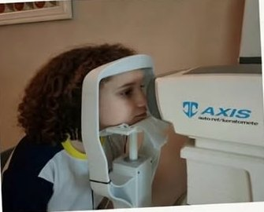
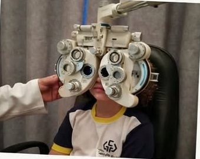
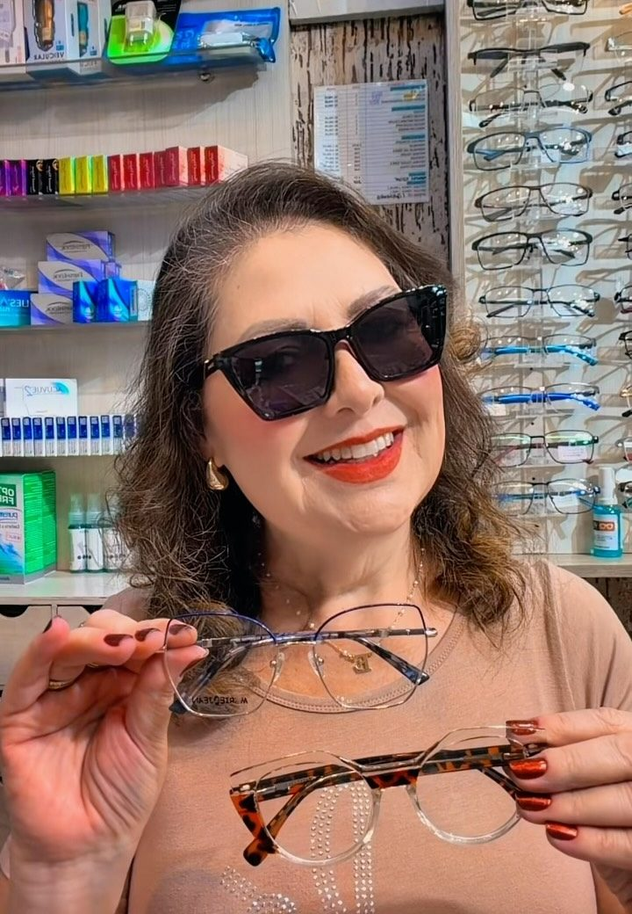
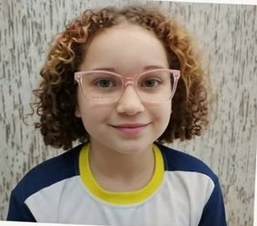
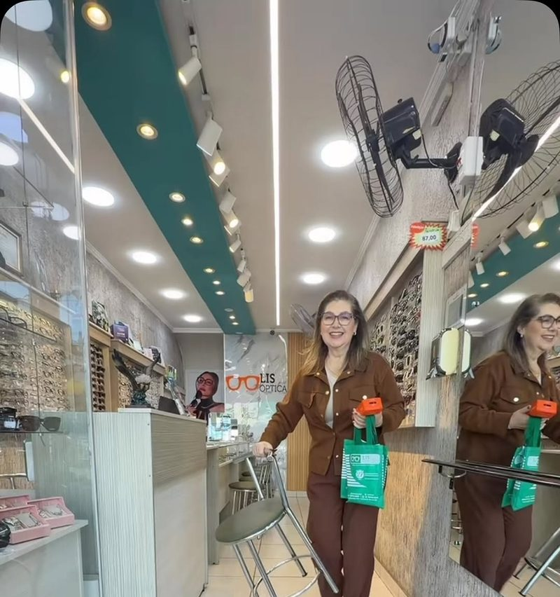
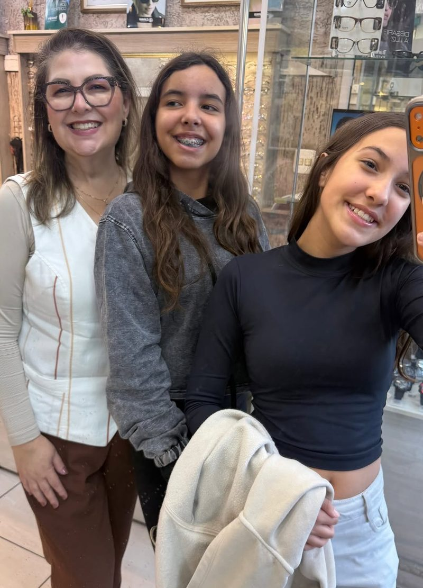

01
Exame de vista
Exame de refração e teste de grau feitos na própria loja, com equipamento e cuidado. Você sai sabendo exatamente o que precisa.
Óptica · Vila Guarani · São Paulo
Há mais de 25 anos a Lis cuida da visão do bairro: exame de vista, óculos de grau e de sol, escolhidos com calma, de perto, por quem conhece você pelo nome.

O que a Lis faz por você


Exame de refração e teste de grau feitos na própria loja, com equipamento e cuidado. Você sai sabendo exatamente o que precisa.
Armações de diversas marcas e modelos. A Lis ajuda a escolher a que combina com seu rosto, seu estilo e sua rotina.
Proteção para os olhos com aquele modelo que você vai querer usar todo dia.
Menos reflexo, mais conforto. Faz diferença na tela, no volante à noite e no dia a dia.

Exame tranquilo e divertido para os pequenos, e armações coloridas que eles gostam de usar.

Quem cuida da sua visão
São mais de 25 anos cuidando da visão de quem mora e passa pela Vila Guarani. Aqui ninguém é número: quem recebe você é a própria Lis, que olha seu exame com atenção, testa armação por armação com você e só sossega quando você se vê bem no espelho.
É por isso que tanta gente volta. E traz a filha, a mãe, o vizinho.
Mandar um oi pra Lis“Hoje eu só vou dar uma olhadinha.”
Na Lis é assim
Clientes da Lis
“Atendimento excelente, variedade de modelos e qualidade nos produtos. Fiquei muito satisfeito com a minha escolha!”

Visite a loja